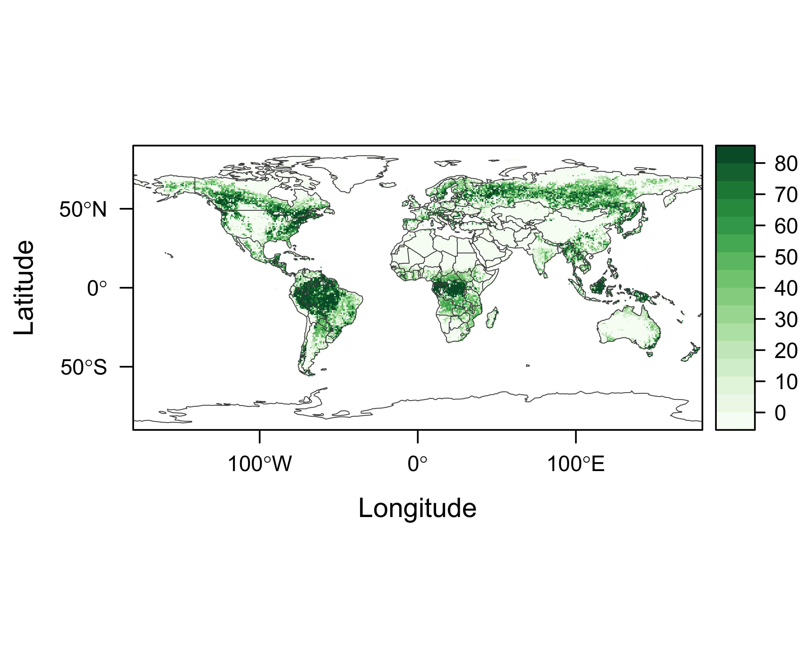
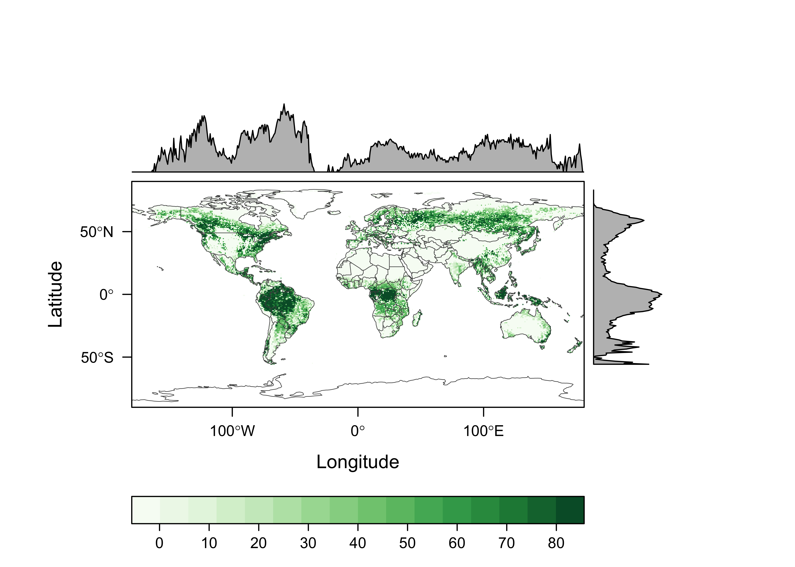
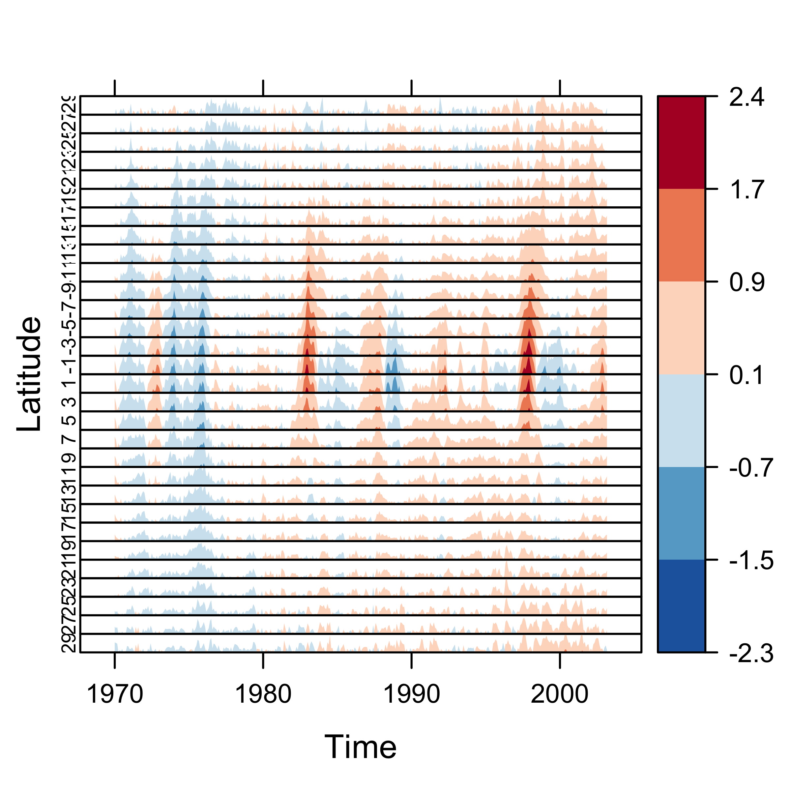
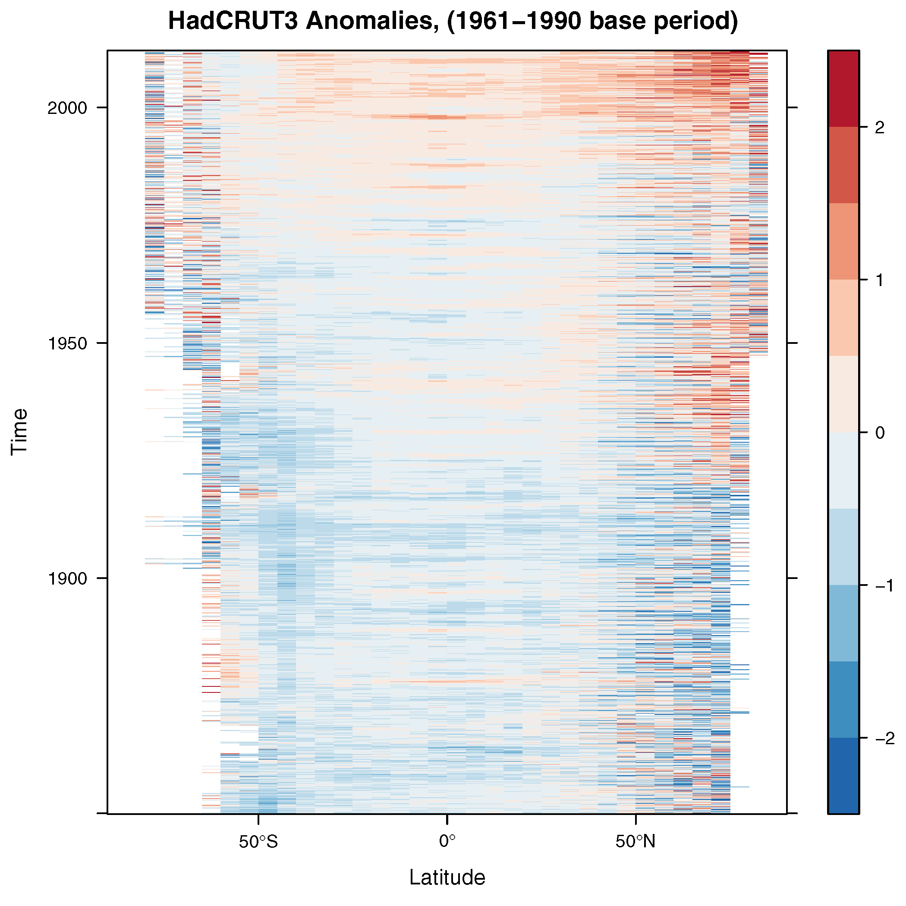
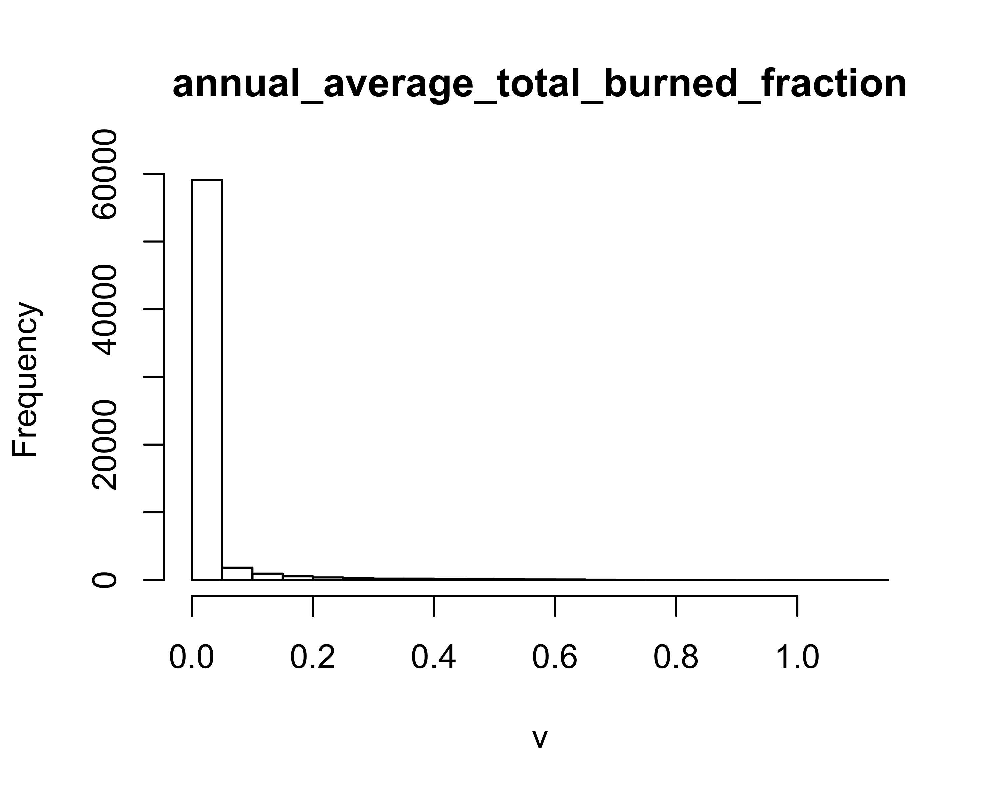
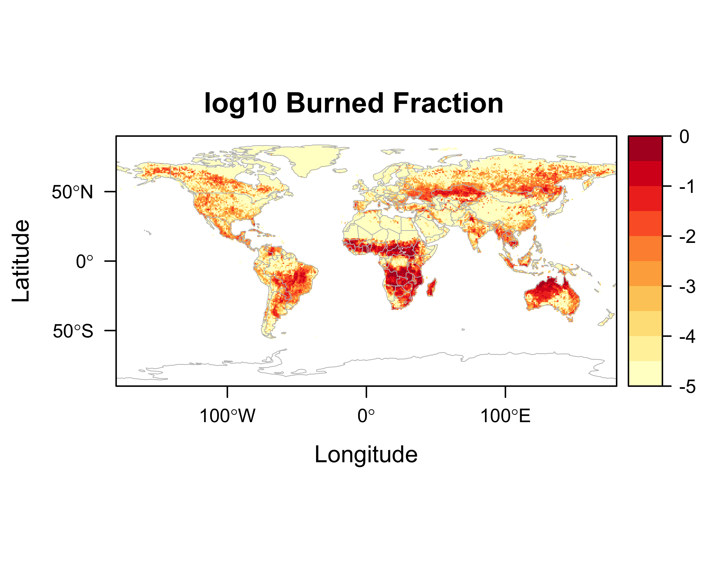
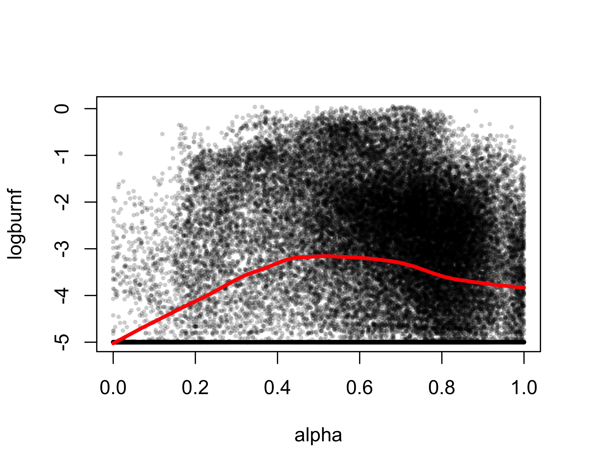
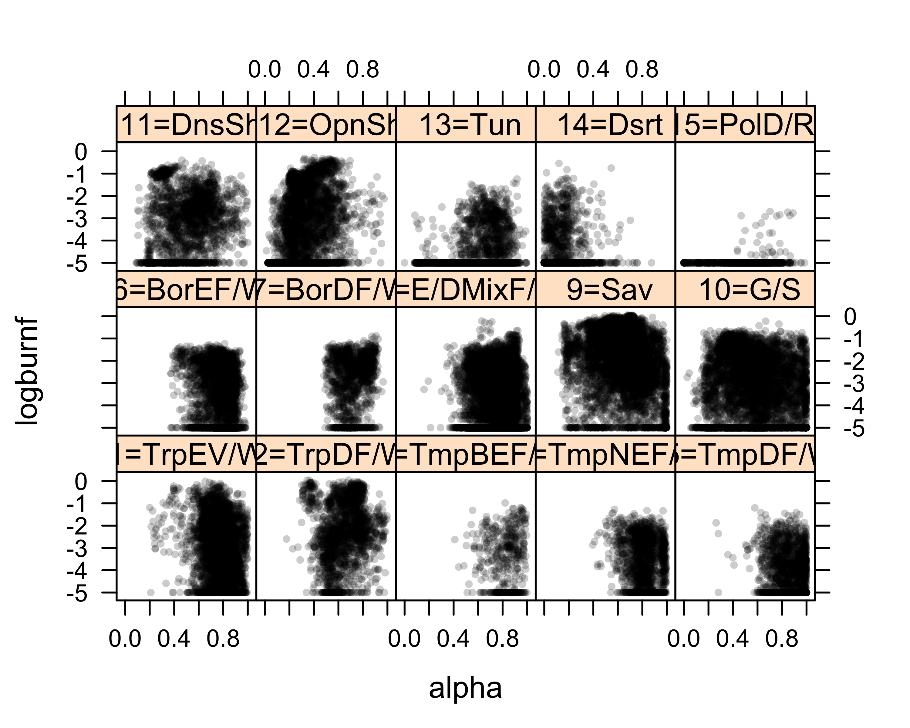
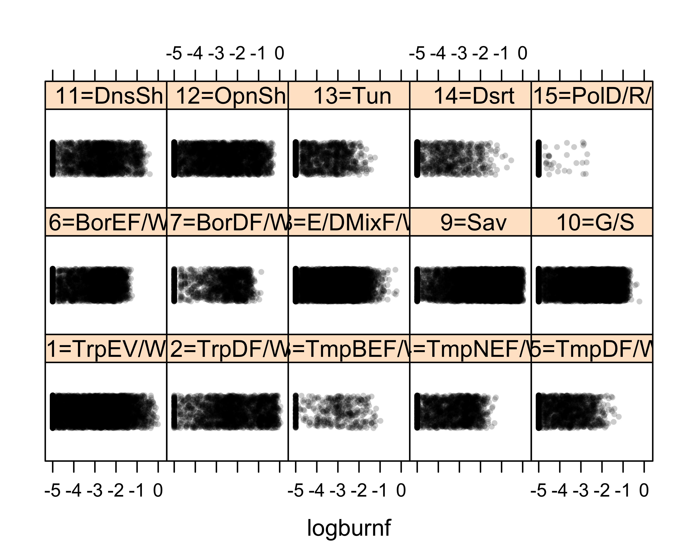

raster and rasterVis
1 Examples of the use of the raster package to read and analyze raster data sets
1.1 Preliminaries
The following files will be used here, and area available on the SFTP server, in the folder /nc_files:
cru10min30_tmp.nc, cru10min30_bio.nc1, SSTexample.nc, air.mon.anom.nc, GFEDv3.1_ltm.nc, sage_veg30.nc, and treecov.nc.
Download or copy the files to a “data folder” like "/Users/bartlein/Projects/ESSD/data/nc_files". The examples also make use of the world-outline shape file (ne_110m_admin_0_countries.shp), in the folder /shp_files.
The following examples use functions from the raster and rasterVis packages to read and display a few data sets. The datasets used here happen to be stored as netCDF files, but the raster package can also read and write other formats that raster data are commonly stored in. The raster package implements three basic objects or classes: 1) a rasterLayer, which is a single 2-D, x-y array of values (e.g. a DEM), 2) a rasterStack, a set of individual co-registered (i.e. on the same grid) rasterLayer objects (usually different variables), and 3) a rasterBrick, representing a set of layers that make up 3-D data set of a particular variable, such as a climate variable observed over time, or a set of bands in a multi- or hyperspectral image. Individual layers can be assembled into a stack, and can also be formed by extracting a 2-D slice from a raster brick.
Load the appropriate packages (installing them first if they’re not present, i.e. install.packages("maptools"):
library(maptools) # also loads sp package
library(ncdf4)
library(raster)
library(rasterVis)
library(RColorBrewer)
library(zoo)
library(sf)For subsequent use, read the world country-outlines shape file:
# set path and shape file name
shp_path <- "/Users/bartlein/Projects/ESSD/data/shp_files/ne_110m_admin_0_countries/"
shp_name <- "ne_110m_admin_0_countries.shp"
shp_file <- paste(shp_path, shp_name, sep="")
# read the shapefile
world_shp <- read_sf(shp_file)
world_outline <- as(st_geometry(world_shp), Class="Spatial")
# plot the outline
plot(world_outline, col="gray80", lwd=1)
1.2 Reading a netCDF file using the raster package
Read a single-variable netCDF dataset describing global tree cover using the raster() function, which operates on a filename. Individual characteristics of the data can be displayed using some utility functions.
# read a single-variable netCDF dataset using raster()
tree_path <- "/Users/bartlein/Projects/ESSD/data/nc_files/"
tree_name <- "treecov.nc"
tree_file <- paste(tree_path, tree_name, sep="")
tree <- raster(tree_file) # open treecov.nc## File /Users/bartlein/Projects/ESSD/data/nc_files/treecov.nc (NC_FORMAT_CLASSIC):
##
## 1 variables (excluding dimension variables):
## float treecov[lon,lat]
## name: treecov
## long_name: treecov
## units: 1
## _FillValue: -9
##
## 2 dimensions:
## lon Size:720
## standard_name: longitude
## long_name: longitude
## units: degrees_east
## axis: X
## lat Size:360
## standard_name: latitude
## long_name: latitude
## units: degrees_north
## axis: Y
##
## 3 global attributes:
## source: UMD Tree Cover Data resampled to 0.5-degrees
## data: gl-latlong-8km-landcover.bsq.gz
## history: P.J. Bartlein, 20 Feb 2008## class : RasterLayer
## dimensions : 360, 720, 259200 (nrow, ncol, ncell)
## resolution : 0.5, 0.5 (x, y)
## extent : -180, 180, -90, 90 (xmin, xmax, ymin, ymax)
## coord. ref. : +proj=longlat +datum=WGS84 +ellps=WGS84 +towgs84=0,0,0
## data source : /Users/bartlein/Projects/ESSD/data/nc_files/treecov.nc
## names : treecov
## zvar : treecov## [1] "/Users/bartlein/Projects/ESSD/data/nc_files/treecov.nc"
## [2] "TRUE"
## [3] "FALSE"In the above example, the raster() function opens the netCDF file, and creates a raster object (tree). Printing this object using the print() function displays the netCDF metadata (or “attributes”), while simply “typing” the object name displays the attributes of the raster object. The functions filename(), hasValues() and inMemory() display the filename of the object, whether it currently contains values, and whether it is stored in memory, or still resides on disk. In this case, the data in the file /Users/bartlein/Projects/ESSD/data/nc_files/treecov.nc still resides on disk (inMemory(tree) = FALSE).
The range of tree (tree cover) can be gotten with the cellStats() function. Values less than 0.0 indicate barren land-surfac cover, and these values can be recoded to be equal to 0.0.
## [1] -2 80Next, a basic plot of the data can be generated using the levelplot() function. (The rasterVis package implements a number of Lattice-type plots for raster data sets.)

A better map can be genrated by setting a rasterTheme (in this case a progressive color scale of green from the RColorBrewer palette), generating the levelplot() object, and then adding a layer to the plot consisting of the countru outlines (world.shp).
# plot with outlines, a better color scale, no marginal plots
mapTheme <- rasterTheme(region=brewer.pal(8,"Greens"))
plt <- levelplot(tree, margin=F, par.settings=mapTheme)
plt + layer(sp.lines(world_outline, col="gray30", lwd=0.5))
Here is another version, with outlines, a better color scale, and “marginal plots”.
# plot with outlines, a better color scale, marginal plots
mapTheme <- rasterTheme(region=brewer.pal(8,"Greens"))
plt <- levelplot(tree, margin=T, par.settings=mapTheme)
plt + layer(sp.lines(world_outline, col="gray30", lwd=0.5))
2 Hovmöller and horizon plots
The rasterVis package provides a couple of interesting Lattice-type plots that can be used to visualize 3-D data (usually a function of latitude, longitude and time). The Hovmöller plot is a 2-D time/space diagram, where, for example, zonal (E-W) or meridional (N-S) averages are plotted relative to time. The horizon plot plots multiple time series (here average values for individual latitudinal zones) in a way that allows common trends to be visualized. Read an example data set (SST: Sea-surface temperature)
# read a single-variable netCDF dataset using raster()
SST_path <- "/Users/bartlein/Projects/ESSD/data/nc_files/"
SST_name <- "SSTexample.nc"
SST_file <- paste(SST_path, SST_name, sep="")
SST <- brick(SST_file) # open SSTexample.nc, but do not read yetPrint some summary info, and note that hasValues(SST) = "TRUE", meaning that the raster file (SSTexample.nc) alread contains values, and inMemory(SST) = "FALSE", meaning that while the data are on disk, they are not yet in memory:
## class : RasterBrick
## dimensions : 30, 84, 2520, 399 (nrow, ncol, ncell, nlayers)
## resolution : 2, 2 (x, y)
## extent : 123, 291, -30, 30 (xmin, xmax, ymin, ymax)
## coord. ref. : +proj=longlat +datum=WGS84 +ellps=WGS84 +towgs84=0,0,0
## data source : /Users/bartlein/Projects/ESSD/data/nc_files/SSTexample.nc
## names : X1, X2, X3, X4, X5, X6, X7, X8, X9, X10, X11, X12, X13, X14, X15, ...
## unknown : 1, 399 (min, max)
## varname : variable## [1] "/Users/bartlein/Projects/ESSD/data/nc_files/SSTexample.nc"
## [2] "TRUE"
## [3] "FALSE"The following code does a little setup for the Hovmöller plot, generating a sequence of dates using the zoo package, then sets the variable to be plotted.
# setup add date information
idx <- seq(as.Date('1970-01-01'), as.Date('2003-03-01'), by='month')
idx <- as.yearmon(idx)
SST <- setZ(SST, idx, name="time")
names(SST) <- as.character(idx)Generate the Hovmöller plot…
hovmoller(SST,
at = do.breaks(c(-2.5,2.5),10),
contour=F, interpolate=F,
par.settings=RdBuTheme(region=rev(brewer.pal(9,'RdBu'))),
main="Pacific SST Anomalies" )
… and the horizon plot:
# horizonplot -- rasterVis example
horizonplot(SST, ylab="Latitude", xlab="Time",col.regions=rev(brewer.pal(n=6, 'RdBu')) )
2.1 Hovmöller plots – a second example
This second example shows how a Hovmöller plot can be written directly to a .pdf file, which may be useful when it takes a while to generate. The data here are a combined set of land and ocean temperature anomalies from 1850 through the beginning of 2012.
# HADCRUT3 Combined Air Temperature/SST Anomalies
# read a 3-D netCDF dataset
hadcrut3_path <- "/Users/bartlein/Projects/ESSD/data/nc_files/"
hadcrut3_name <- "air.mon.anom.nc"
hadcrut3_file <- paste(hadcrut3_path, hadcrut3_name, sep="")
hadcrut3 <- brick(hadcrut3_file) # open air.mon.anom.ncSummary of the file contents:
## class : RasterBrick
## dimensions : 36, 72, 2592, 1947 (nrow, ncol, ncell, nlayers)
## resolution : 5, 5 (x, y)
## extent : -180, 180, -90, 90 (xmin, xmax, ymin, ymax)
## coord. ref. : +proj=longlat +datum=WGS84 +ellps=WGS84 +towgs84=0,0,0
## data source : /Users/bartlein/Projects/ESSD/data/nc_files/air.mon.anom.nc
## names : X1850.01.01, X1850.02.01, X1850.03.01, X1850.04.01, X1850.05.01, X1850.06.01, X1850.07.01, X1850.08.01, X1850.09.01, X1850.10.01, X1850.11.01, X1850.12.01, X1851.01.01, X1851.02.01, X1851.03.01, ...
## Date : 1850-01-01, 2012-03-01 (min, max)
## varname : air## [1] "/Users/bartlein/Projects/ESSD/data/nc_files/air.mon.anom.nc"
## [2] "TRUE"
## [3] "FALSE"Setup and produce the Hovmöller plot:
# setup
idx <- seq(as.Date('1850-01-01'), as.Date('2012-03-01'), 'month')
idx <- as.yearmon(idx)
tmpplt <- setZ(hadcrut3, idx)
names(tmpplt) <- as.character(idx)
# plot
trellis.device('pdf', file='hov02.pdf')
hovmoller(tmpplt, dirXY=y,
at = do.breaks(c(-2.5,2.5),10),
contour=F, interpolate=F,
par.settings=RdBuTheme(region=rev(brewer.pal(9,'RdBu'))),
main="HadCRUT3 Anomalies, (1961-1990 base period)" )
dev.off()When the above code is executed, a file named hov02.pdf will be created in the current working directory. Here’s the resulting plot should look like:

3 Example – controls of global fire
This example shows how the raster package can be used to support a typical data analysis, in this case focusing on explaining the global pattern of biomass burning. Here, the raster package is used to extract, combine and analyze data from multiple sources
The data consist of
- satellite remote sensing data of fire from the GFED3 data set
- calculated values of the ratio of actual to potential equilibrium evapotranspiration
- a data set showing the distribution of potential natural vegetation.
3.1 Read and map the data
First, the three data sets are read in, and the individual variables mapped using an appropriate mapTheme for each variable:
# read burned fraction ltm (long-term mean)# read GFEDv3.1_ltm.nc:
GFED_path <- "/Users/bartlein/Projects/ESSD/data/nc_files/"
GFED_name <- "GFEDv3.1_ltm.nc"
GFED_file <- paste(GFED_path, GFED_name, sep="")
burnf <- raster(GFED_file, varname="bf_ann_ave")
burnf## class : RasterLayer
## dimensions : 360, 720, 259200 (nrow, ncol, ncell)
## resolution : 0.5, 0.5 (x, y)
## extent : -180, 180, -90, 90 (xmin, xmax, ymin, ymax)
## coord. ref. : +proj=longlat +datum=WGS84 +ellps=WGS84 +towgs84=0,0,0
## data source : /Users/bartlein/Projects/ESSD/data/nc_files/GFEDv3.1_ltm.nc
## names : annual_average_total_burned_fraction
## zvar : bf_ann_avemapTheme <- rasterTheme(region=brewer.pal(8,"YlOrRd"))
plt <- levelplot(burnf, margin=F, par.settings=mapTheme,
at = do.breaks(c(0,1),10),
main="Burned Fraction")
plt + layer(sp.lines(world_outline, col="gray", lwd=0.5))
The distribution of burnf has an extremely long right tail

and so it make sense to (log10) transform the data, adding a small constant.
# log of burnf
logtrans <- function(x) {log10(x+0.00001)}
logburnf <- calc(burnf, logtrans)
mapTheme <- rasterTheme(region=brewer.pal(8,"YlOrRd"))
plt <- levelplot(logburnf, margin=F, par.settings=mapTheme,
at = do.breaks(c(-5,0),10),
main="log10 Burned Fraction")
plt + layer(sp.lines(world_outline, col="gray", lwd=0.5))
Now read a bioclimatic variable, alpha, the ratio of actual to potential equilibrium evapotranspiration.
# read alpha (AE/PE)
alpha_path <- "/Users/bartlein/Projects/ESSD/data/nc_files/"
alpha_name <- "cru10min30_bio.nc"
alpha_file <- paste(alpha_path, alpha_name, sep="")
alpha=raster(alpha_file, varname="mipt")
alpha## class : RasterLayer
## dimensions : 360, 720, 259200 (nrow, ncol, ncell)
## resolution : 0.5, 0.5 (x, y)
## extent : -180, 180, -90, 90 (xmin, xmax, ymin, ymax)
## coord. ref. : +proj=longlat +datum=WGS84 +ellps=WGS84 +towgs84=0,0,0
## data source : /Users/bartlein/Projects/ESSD/data/nc_files/cru10min30_bio.nc
## names : Priestley.Taylor..alpha..parameter..AE.PE.
## zvar : miptmapTheme <- rasterTheme(region=brewer.pal(8,"BrBG"))
plt <- levelplot(alpha, margin=F, par.settings=mapTheme, main="AE/PE")
plt + layer(sp.lines(world_outline, col="gray30", lwd=0.5))
Finally, read some potential natural vegetation data
# read potential natural vegetation data sage_veg30.nc:
vegtype_path <- "/Users/bartlein/Projects/ESSD/data/nc_files/"
vegtype_name <- "sage_veg30.nc"
vegtype_file <- paste(vegtype_path, vegtype_name, sep="")
vegtype=raster(vegtype_file, varname="vegtype")
vegtype## class : RasterLayer
## dimensions : 360, 720, 259200 (nrow, ncol, ncell)
## resolution : 0.5, 0.5 (x, y)
## extent : -180, 180, -90, 90 (xmin, xmax, ymin, ymax)
## coord. ref. : +proj=longlat +datum=WGS84 +ellps=WGS84 +towgs84=0,0,0
## data source : /Users/bartlein/Projects/ESSD/data/nc_files/sage_veg30.nc
## names : vegetation.type
## zvar : vegtypemapTheme <- rasterTheme(region=rev(brewer.pal(8,"Greens")))
plt <- levelplot(vegtype, margin=F, par.settings=mapTheme,
main="Potential Natural Vegetation")
plt + layer(sp.lines(world_outline, col="gray30", lwd=0.5)) The names of the individual vegetation types can be gotten by rereading the file using functions from the
The names of the individual vegetation types can be gotten by rereading the file using functions from the ncdf package, and getting the names from the “global attribute” key.
veg.nc <- nc_open(vegtype_file)
vegkey <- ncatt_get(veg.nc,0,"key")
nc_close(veg.nc)
vtype <- strsplit(vegkey$value,",")
vtype <- unlist(vtype)
vtype## [1] "1=TrpEV/W" " 2=TrpDF/W" " 3=TmpBEF/W" " 4=TmpNEF/W" " 5=TmpDF/W" " 6=BorEF/W"
## [7] " 7=BorDF/W" " 8=E/DMixF/W" " 9=Sav" " 10=G/S" " 11=DnsSh" " 12=OpnSh"
## [13] " 13=Tun" " 14=Dsrt" " 15=PolD/R/I"3.2 Create a dataframe fromt the three files
Next, the individual data sets are stacked, and a dataframe is created. Ocean points (NAs) are removed, and the vegetation-type data are converted to a factor
# convert and merge rasters into a data frame
gfire2 <- cbind(as.data.frame(alpha, xy=TRUE),as.data.frame(logburnf), as.data.frame(vegtype))
names(gfire2) <- c("lon","lat","alpha","logburnf","vegtype")
head(gfire2)## lon lat alpha logburnf vegtype
## 1 -179.75 89.75 NA NA NA
## 2 -179.25 89.75 NA NA NA
## 3 -178.75 89.75 NA NA NA
## 4 -178.25 89.75 NA NA NA
## 5 -177.75 89.75 NA NA NA
## 6 -177.25 89.75 NA NA NA## [1] 58532 5## lon lat alpha logburnf vegtype
## 10277 -81.75 82.75 0.3074 -5 15
## 10278 -81.25 82.75 0.3176 -5 15
## 10279 -80.75 82.75 0.4641 -5 15
## 10987 -86.75 82.25 0.2703 -5 15
## 10988 -86.25 82.25 0.3529 -5 15
## 10989 -85.75 82.25 0.3002 -5 15An alternative approach, using the stack() function from raster is:
# alternative approach:
# raster to rectangular data set using stack() and getValues()
gfire <- stack(alpha, logburnf, vegtype)
names(gfire) <- c("alpha","logburnf","vegtype")
dim(gfire)
gfire2 <- getValues(gfire)
dim(gfire2)
# remove NAs and convert to a data frame
gfire2<- na.omit(gfire2)
dim(gfire2)
gfire2 <- as.data.frame(gfire2, xy=TRUE, centroids=TRUE)
head(gfire2)3.3 A simple analysis
At this point, the data can be analyzed using the standard visualization and model-fitting approaches implemented by R. Here is a loess curve fit to the GFED data, showing the nonlinear relationship between burned fraction and alpha.
# a standard plot, with an added loess curve
# This takes a while...
# plot data using transparent symbols
transp_black <- rgb(0,0,0,0.2)
plot(logburnf ~ alpha, data=gfire2, col=transp_black, pch=16, cex=0.5)
# fit a loess curve
loess.model <- loess(logburnf ~ alpha, data=gfire2, span=0.50, degree=1)
loess.model## Call:
## loess(formula = logburnf ~ alpha, data = gfire2, span = 0.5,
## degree = 1)
##
## Number of Observations: 58532
## Equivalent Number of Parameters: 4.14
## Residual Standard Error: 1.392hat <- predict(loess.model)
lines(gfire2$alpha[order(gfire2$alpha)], hat[order(gfire2$alpha)],
lwd=3, col="red")
4 Other rasterVis plots
Here are a few lattice-type plots that might aid in the interpretation of these data
Before generating the plots, recode the vegetation type (vtype) to a factor.
# recode vegtype to a factor
vtypechar <- vtype[as.integer(gfire2$vegtype)]
gfire2$vfact <- factor(vtypechar, levels=vtype)# various lattice-type plots
# (which also take a little while...)
xyplot(logburnf ~ alpha | vfact, data=gfire2, pch=16, cex=0.5, col=transp_black)


stripplot(~ logburnf | vfact, data=gfire2,
jitter.data=T, factor=10.0, pch=16, cex=0.5, col=transp_black)